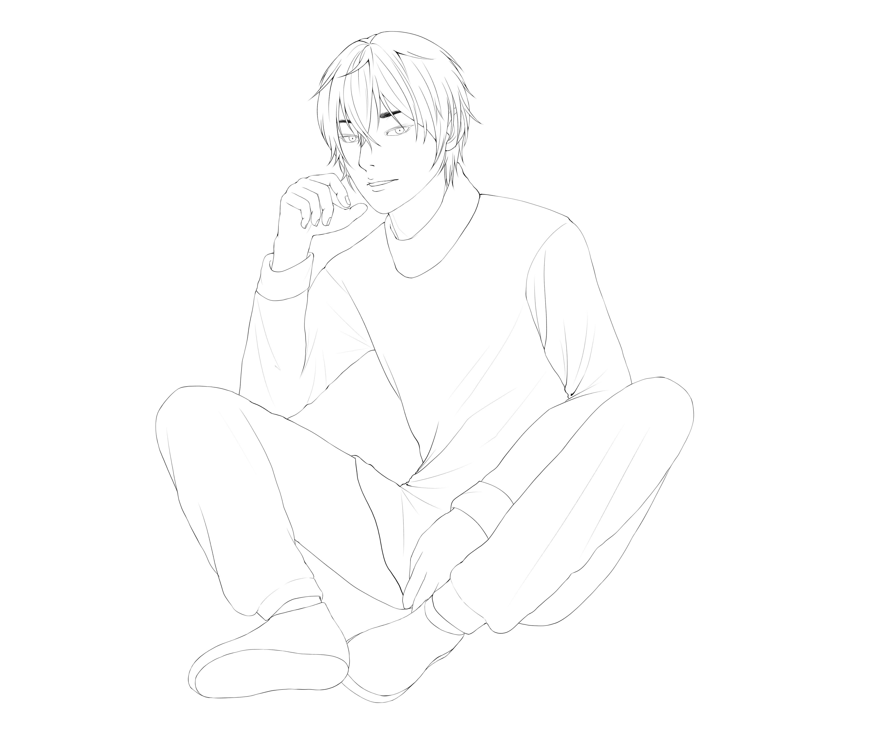
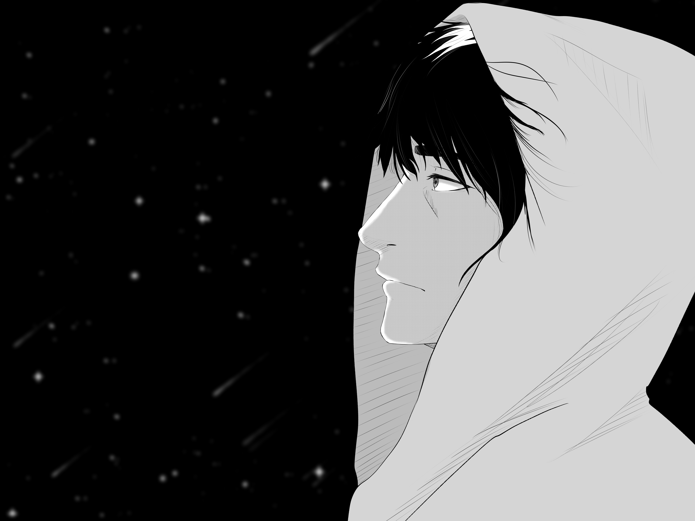
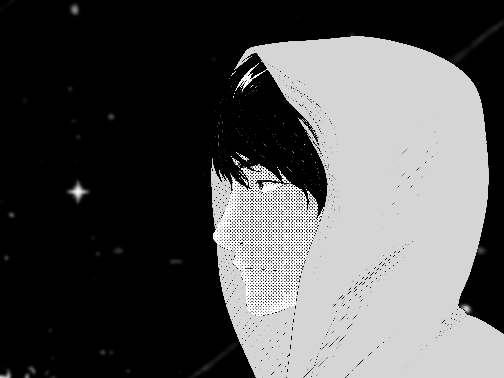

Art & Illustration
A collection of digital illustrations, original characters, anime-inspired drawings, chibi art, and custom character designs. Most of these works were created using Medibang Paint.
My OC — Original Character
My original characters are the most personal part of my art practice. These works focus on character personality, emotion, pose, and storytelling. I used Medibang Paint to create both the clean versions and alternative visual effects.


Original Character Design
This OC project allowed me to explore how a character can feel expressive and personal through pose, facial expression, clothing, and small visual details. I worked with clean line art, soft colors, and a character-focused composition.
Platform: Medibang Paint


Sketch & Visual Effect
For this drawing, I experimented with different versions of the same character. The sketch version shows the early structure and line work, while the effect version explores mood, depth, and atmosphere.
Platform: Medibang Paint
Anime Art
Anime-inspired illustrations created from imagination. These works focus on expressive faces, dramatic poses, ink details, and character mood. I used Medibang Paint for sketching, line art, and coloring.

Eren Yeager
A fan art piece inspired by Eren Yeager. I focused on intensity, expression, and dramatic anime-style character presentation.
Platform: Medibang Paint

Lineart Version
This version focuses more on ink work, contrast, and strong line details. I wanted the drawing to feel sharper and more dramatic.

Historia
In this version, I explored a different composition and visual feeling while keeping the anime-inspired style and emotional character focus.


Sora
Sora includes two versions of the same creative direction. I worked with pose, character energy, and softer anime-style expression.
Platform: Medibang Paint
Chibi Art
Chibi illustrations are playful, expressive, and compact. I used this style to practice simplified proportions, cute expressions, and character personality.


Chibi Character Illustrations
These two chibi drawings show my interest in cute, simplified character design. I focused on soft shapes, expressive faces, and making the characters feel friendly and visually clear.
Platform: Medibang Paint
Friends' OC
Custom original character drawings created for friends. Each character was based on a personal idea, personality, or story, then translated into an anime-inspired illustration.


Friend OC — Sketch & Black/White
This character started as a sketch and was developed into a cleaner black-and-white illustration. I focused on character identity, hairstyle, expression, and pose.
Platform: Medibang Paint


Friend OC — Full Color
For this character, I worked more with color, mood, and final presentation. The goal was to make the character feel personal and connected to my friend's idea.
Platform: Medibang Paint
Gymnasiearbete — Visual Storytelling
For my high school graduation project, I explored how music can be translated into visual storytelling. I created a series of illustrations inspired by the song Link It All by the Japanese rock band SPYAIR, transforming the emotions and story I interpreted from the song into a visual narrative.


From Music to Illustration
The idea behind the project was to take a song and interpret it visually. Instead of illustrating individual lyrics literally, I developed a story based on the emotions, atmosphere, and meaning I experienced while listening to Link It All.
I then translated that interpretation into a sequence of drawings. Characters, expressions, poses, composition, and the progression between the illustrations were used to communicate the story without relying only on written explanation.
Project: High School Graduation Project


Building the Visual Story
One of the main challenges was making the illustrations work together rather than treating every drawing as an independent artwork. I wanted the viewer to be able to follow a visual progression from one scene to the next.
This meant thinking not only about drawing, but also about storytelling: how the characters should be presented, which moments should be shown, how emotions should change throughout the sequence, and how each image could contribute to the overall narrative.
Final Illustrated Story
The finished project became a visual interpretation of the song rather than simply a collection of drawings. It combined my interest in Japanese music, illustration, character design, and narrative storytelling in one project.
Looking back at the project, it represents an important stage in my development as an artist. It was one of the projects where I began thinking about illustration as a way of communicating a larger idea and telling a story, rather than focusing only on creating a single image.
Inspiration: SPYAIR — Link It All
Want to See More?
This page showcases a selection of my artwork, but it is only a small part of my artistic journey. If you'd like to explore more illustrations, sketches, works in progress, and recent creations, feel free to visit my Instagram.
@rama.rin